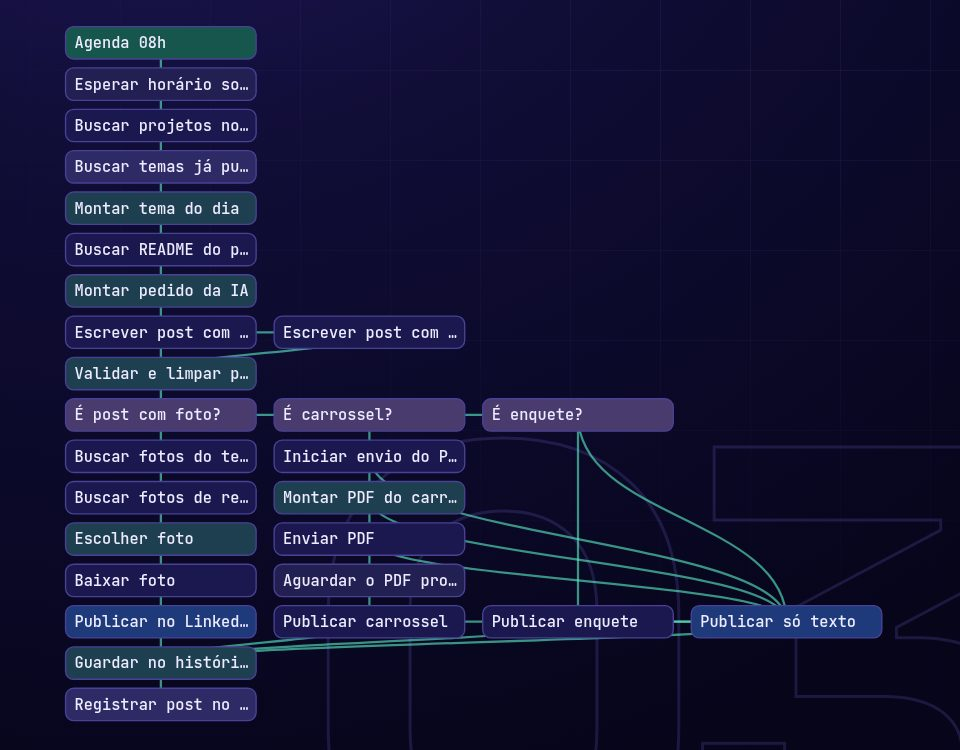

Leo Magalhães
Leo Magalhães01 · PostEngineAINo ar
Robô que publica no LinkedIn todos os dias
Do tema à publicação, sem intervenção: escolhe o assunto, escreve com IA, revisa, busca a imagem, publica e registra.
- Problema
- Manter constância no LinkedIn exigia um tempo que a rotina não tinha.
- Solução
- Um fluxo de 27 etapas que decide o formato do dia (foto, carrossel, enquete ou texto) e evita repetir temas.
- Resultado
- Um post por dia rodando num servidor próprio, com IA reserva e segunda busca de imagem quando algo falha.
- n8n
- Gemini
- Notion
- Pixabay API
- LinkedIn API
- Linux VPS
